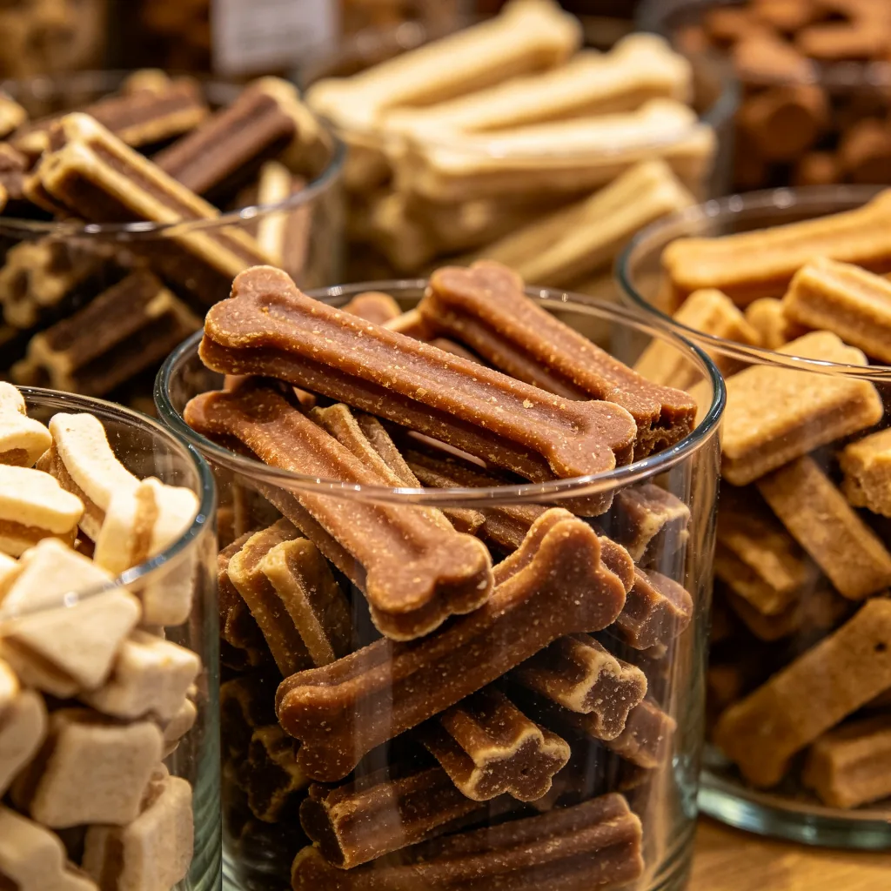

如果你去過動物園的小熊貓館，你一定看過這樣的畫面：一隻小熊貓用後腿和尾巴鉤住樹枝，身體完全倒掛下來，頭朝下望著你，一雙圓滾滾的眼睛閃爍著好奇的光芒。有時候牠們還會在倒掛的狀態下啃食竹葉，或者用前爪抓取飼養員遞來的蘋果，動作之靈活、姿態之優雅，讓人忍不住驚嘆：這簡直就是動物園裡的體操運動員！但你有沒有想過，小熊貓為什麼要做這麼高難度的動作？倒掛對牠們來說到底有什麼意義？
小熊貓不是熊貓？
在開始討論倒掛之前，我們先來澄清一個常見的誤解：小熊貓（red panda）和大熊貓（giant panda）雖然名字裡都有「熊貓」，但牠們其實不是近親。長期以來，科學家對小熊貓的分類一直存在爭議——有人認為牠屬於浣熊科，有人認為牠屬於熊科，還有人主張為牠單獨設立一個科。直到近年的DNA研究才確定，小熊貓是小熊貓科（Ailuridae）下唯一的現存物種，與鼬科、浣熊科和臭鼬科的關係更近，而與大熊貓所在的熊科關係較遠。
那麼為什麼兩種動物都叫「熊貓」呢？其實「熊貓」（panda）這個名字最早是用來稱呼小熊貓的，源自尼泊爾語中的「ponya」，意思是「吃竹子的動物」。後來當西方人在1869年「發現」大熊貓時，因為牠也吃竹子、而且體型更大，就把牠稱為「大熊貓」（giant panda），而原來的熊貓就變成了「小熊貓」（red panda）。所以嚴格來說，小熊貓才是「正版」的熊貓。

倒掛背後的生存智慧
回到那個問題：小熊貓為什麼喜歡倒掛？動物行為學家認為，這個看似特技的動作其實有多重功能：
- 進食策略：小熊貓的主要食物是竹子，但竹子的營養價值很低，小熊貓每天需要吃下相當於體重20-30%的竹子才能維持生存。在野外，竹子往往生長在陡峭的山坡和懸崖邊，倒掛可以讓小熊貓夠到那些在正常姿態下無法觸及的竹筍和嫩葉。
- 躲避天敵：小熊貓的天敵包括雪豹、黃喉貂和老鷹等。當遇到危險時，小熊貓會迅速爬上樹，然後用倒掛的方式躲在濃密的樹枝和葉子中。從下方看，倒掛的小熊貓與樹枝和樹皮融為一體，很難被發現。
- 體溫調節：小熊貓生活在海拔2000-4000公尺的高山森林中，氣候寒冷潮濕。在天氣炎熱時，倒掛可以讓小熊貓的腹部（毛髮較少的區域）暴露在空氣中，幫助散熱。而在寒冷時，牠們則會捲成一團，用蓬鬆的尾巴蓋住臉來保暖。
- 社交與玩耍：在人工飼養環境中，小熊貓的倒掛行為往往帶有玩耍和社交的性質。年輕的小熊貓會透過倒掛、追逐和打鬥來練習運動技能，成年個體之間也會用這種方式來互動和建立關係。
小熊貓的「超能力」
除了倒掛之外，小熊貓還有很多令人驚嘆的特質：
偽裝大師
小熊貓的紅棕色毛髮在人類看來非常顯眼，但在牠們的原生棲地——喜馬拉雅山脈的針葉林中——卻是極佳的偽裝。當地的樹木（如鐵杉）的樹苔就是紅棕色的，小熊貓蜷縮在樹枝上時，與周圍的環境幾乎融為一體。此外，小熊貓的尾巴有環狀的花紋，當牠們把尾巴纏在身上時，這些花紋可以打斷身體的輪廓，進一步增強偽裝效果。

偽拇指
和大熊貓一樣，小熊貓也有一個「偽拇指」——這其實是一塊延長的腕骨，可以像拇指一樣對握，幫助牠們抓住竹子和樹枝。這個特徵是兩種熊貓各自獨立演化出來的（稱為趨同演化），證明了吃竹子這件事對手部靈活性的要求有多高。
氣味標記
小熊貓的肛門附近有氣味腺，會分泌一種帶有香味的液體，用來標記領地和傳達資訊。據說這種氣味聞起來有點像爆米花或香草，因此小熊貓有時候也被稱為「爆米花熊貓」。不過，當小熊貓感到威脅時，牠們也會釋放出一種難聞的氣味來驅趕敵人，就像臭鼬一樣。
保育警訊
小熊貓目前被國際自然保護聯盟（IUCN）列為「瀕危」物種，全球野外數量估計不到10000隻，而且還在持續下降。棲地喪失、森林破碎化、非法狩獵（為了皮毛）和氣候變遷是小熊貓面臨的主要威脅。幸運的是，全球已有超過500家動物園參與了小熊貓的保育計畫，透過圈養繁殖和棲地保護來幫助這個物種存活下去。
倒掛在樹上的小熊貓，用牠矯健的身姿和好奇的眼神，為無數動物園遊客帶來了歡笑。但在這可愛的畫面背後，是一個物種千百年來在高山森林中演化出的生存智慧。或許下次當你在動物園看到倒掛的小熊貓時，你看到的不僅僅是一個特技表演，更是一個關於適應、生存和生命韌性的故事。